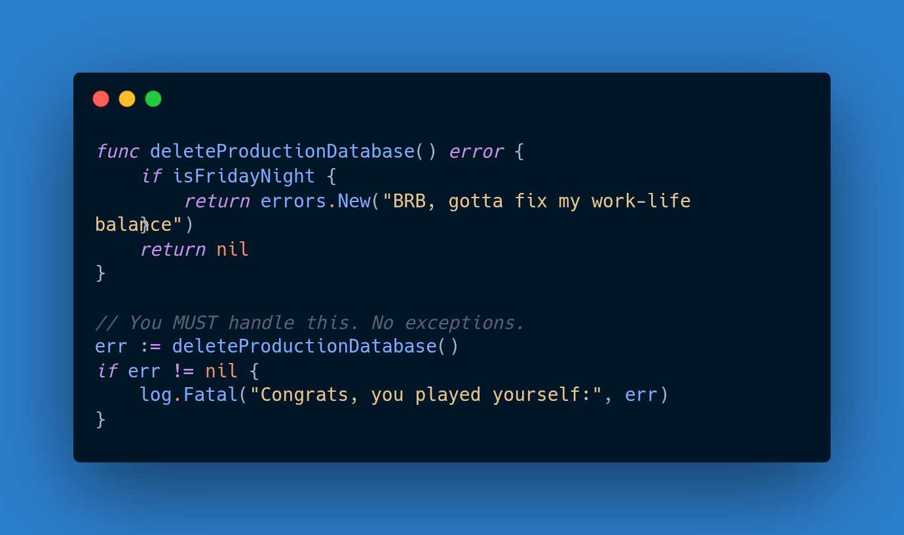

April 9, 2025
As programmers, we all have our guilty pleasures. Maybe it's pretending we'll finally learn Rust this weekend, or writing overly clever one-liners that we can't debug two days later. But deep down, we all share one universal truth: we hate dealing with errors. Not the cute "missing semicolon" kind - but the ";why is the production database on fire?" kind.
Enter Go, the language that treats errors like a stern but fair teacher.
While other languages let you hide mistakes in try-catch blocks like
dirty laundry under the bed, Go makes you face them head-on. That
if err != nil you'll write
fifty times today? That's not boilerplate - that's character building.
The genius is in the brutality. Errors in Go aren't special - they're just values. No magic exceptions, no hidden control flow. When something goes wrong, you know exactly where and why. It's the programming equivalent of your mom making you apologize to the neighbor after your "experiment" with their WiFi password.
So welcome to the pain. The compile times are fast, the binaries are small, and the error handling will make you a better programmer - whether you like it or not. Now if you'll excuse me, I need to go write if err != nil for the hundredth time today.
So whether you're here for insights or just to laugh at my misfortunes, welcome. The only guarantee? At least we're not writing Java. (Disclaimer: 73% of statistics here are made up on the spot. All opinions subject to change after coffee.)